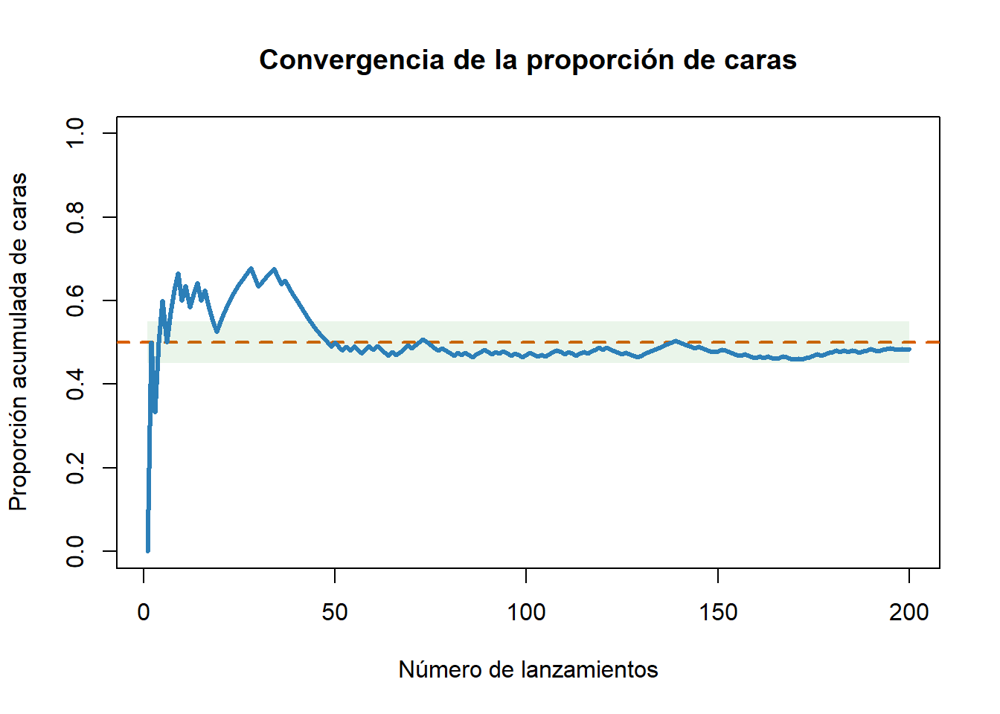
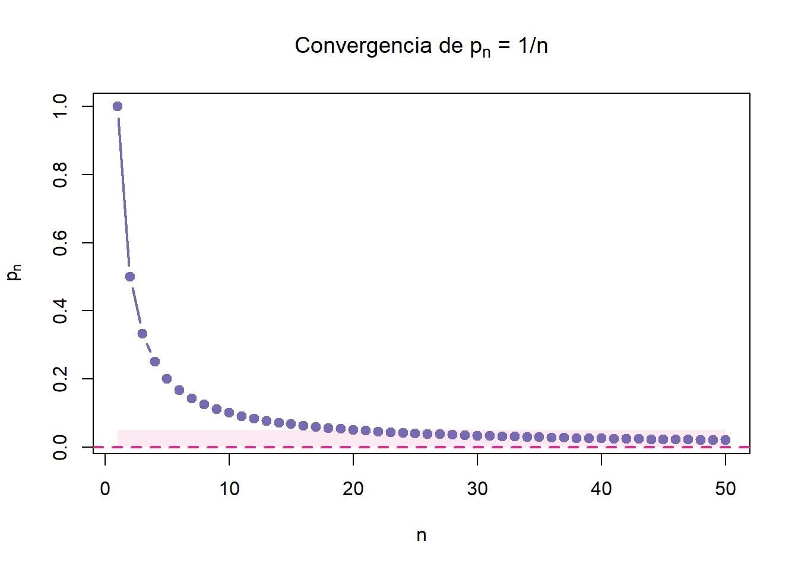
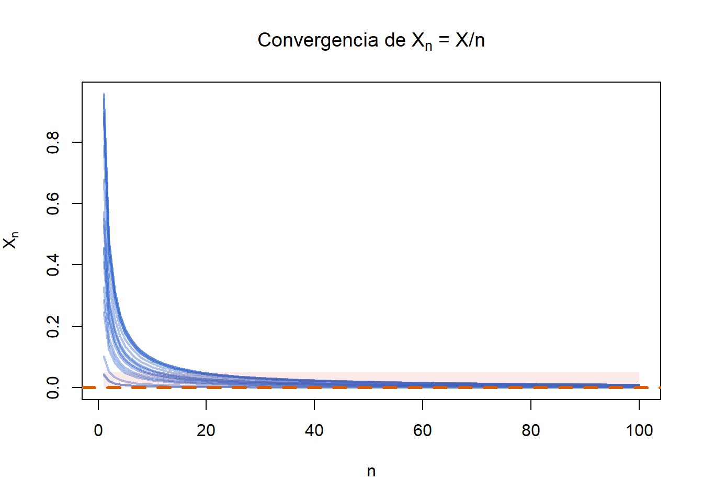

Tema 6 Convergencia: cuando el azar se vuelve predecible
6.1 Intuición: del caos al orden
En muchos problemas de probabilidad y estadística, trabajamos con fenómenos que son inherentemente aleatorios. Cada observación individual puede ser impredecible, pero cuando repetimos el experimento muchas veces, comienzan a aparecer patrones.
Este hecho es uno de los pilares de la estadística:
aunque el comportamiento individual es incierto, el comportamiento agregado es estable.
La idea de convergencia formaliza precisamente este fenómeno. Nos permite entender cómo evolucionan las sucesiones de variables aleatorias cuando el tamaño muestral crece y por qué, en muchos casos, el azar se vuelve predecible.
Gracias a la convergencia podemos:
- justificar el uso de estimadores como la media muestral
- comprender por qué aparecen distribuciones como la normal en muchos contextos
- simplificar problemas complejos mediante aproximaciones
- fundamentar herramientas clave de la estadística y el análisis de datos
A lo largo de este tema veremos que no existe una única forma de converger, sino varias, cada una con un significado distinto y con implicaciones diferentes.
El objetivo no es solo conocer las definiciones, sino entender la idea fundamental:
a medida que aumenta la información, la incertidumbre se reduce y el comportamiento del sistema se vuelve más estructurado.
Este proceso está en la base de muchas decisiones en economía, empresa y ciencia de datos, donde trabajar con grandes cantidades de información permite obtener resultados cada vez más fiables.
6.1.1 ¿Qué significa converger?
En probabilidad, muchas veces trabajamos con fenómenos que son, por naturaleza, aleatorios. Cada observación puede ser impredecible, pero cuando repetimos el experimento muchas veces, empieza a aparecer un patrón.
Idea clave:
> El azar no desaparece, pero se vuelve predecible.
Convergencia significa precisamente eso: que, a medida que aumenta el número de observaciones, los resultados dejan de ser completamente erráticos y comienzan a estabilizarse alrededor de ciertos valores o comportamientos.
Este proceso se conoce como estabilidad asintótica:
Los valores observados tienden a agruparse
La probabilidad de cometer errores grandes disminuye
- Las distribuciones se vuelven más regulares
6.1.2 Ejemplo: lanzamiento de moneda
Imagina que lanzamos una moneda equilibrada muchas veces.
Sea \(p_n\) la proporción de caras tras \(n\) lanzamientos:
\[ p_n = \frac{\text{número de caras}}{n} \]
Al principio:
- Los resultados fluctúan mucho
Pero a medida que \(n\) crece:
- La proporción se estabiliza cerca de 0.5
\[ p_n \to 0.5 \]
Esto ilustra una idea fundamental: aunque cada lanzamiento es aleatorio, el comportamiento global es predecible.

6.1.3 Ejemplo: media muestral
Sea \(X_1, X_2, ..., X_n\) una muestra de una variable aleatoria con esperanza \(\mu\).
La media muestral es:
\[ \bar{X}_n = \frac{1}{n} \sum_{i=1}^n X_i \]
A medida que aumenta el tamaño de la muestra:
\[ \bar{X}_n \to \mu \]
Es decir, el promedio de los datos se acerca al valor real de la población.
Este resultado es clave en estadística:
> Podemos estimar cantidades desconocidas a partir de datos.
6.1.4 Interpretaciones de la convergencia
La convergencia puede entenderse de varias formas complementarias:
- Agrupación de valores: las observaciones se concentran alrededor de un valor
- Reducción del error: es cada vez menos probable observar grandes desviaciones
- Estabilidad de la distribución: las formas de las distribuciones se vuelven más regulares
En todos los casos, la idea es la misma: > El azar sigue existiendo, pero su comportamiento se vuelve cada vez más estructurado.
6.1.5 Ejercicio sencillo
Sea:
\[ p_n = \frac{1}{n} \]
- ¿A qué valor converge \(p_n\)?
- ¿Qué ocurre con \(X_n\) cuando \(n\) crece?
A medida que \(n\) aumenta, el denominador crece y el valor de la fracción se hace cada vez más pequeño. Por tanto,
\[ p_n \to 0 \]
Este ejemplo no es aleatorio, pero resulta útil para introducir la idea de convergencia de forma sencilla: los términos de la sucesión se van acercando a un valor fijo.

Aunque este ejemplo no es aleatorio, ayuda a entender la idea básica:
- Los valores se van acercando a 0
- La variabilidad desaparece
Esto es exactamente lo que buscamos en probabilidad, pero en contextos aleatorios.
6.2 Tipos de convergencia
6.2.1 Introducción
En el apartado anterior hemos visto que una sucesión puede “acercarse” a un valor. Sin embargo, en probabilidad este acercamiento puede ocurrir de distintas formas.
En teoría de la probabilidad, es fundamental distinguir entre los distintos tipos de convergencia de sucesiones de variables aleatorias. Cada tipo de convergencia expresa una forma diferente en la que una secuencia de variables aleatorias puede aproximarse a una variable aleatoria límite. Estas nociones son esenciales tanto desde un punto de vista teórico como aplicado, especialmente en estadística asintótica y modelización del azar.
No todas las convergencias son iguales:
- algunas garantizan una estabilidad muy fuerte
- otras solo describen un comportamiento global
Por ello, distinguimos varios tipos de convergencia, que se diferencian en cómo de exigente es el concepto de aproximación.
Para entender mejor estas diferencias, es útil ordenar los tipos de convergencia desde la más fuerte (más estricta) hasta la más débil:
- Convergencia casi segura
- Convergencia en media cuadrática
- Convergencia en probabilidad
- Convergencia en distribución
A medida que descendemos en esta lista, las condiciones necesarias para que exista convergencia son cada vez menos exigentes.
6.2.2 Convergencia casi segura
Decimos que \(X_n\) converge casi seguramente a \(X\) si:
\[ P\left( \lim_{n \to \infty} X_n = X \right) = 1 \]
Intuición
Con probabilidad 1, la sucesión acaba llegando al valor y se queda ahí.
Es la forma más fuerte de convergencia.
Interpretación
- Puede haber fluctuaciones al principio
- Pero finalmente el comportamiento se estabiliza definitivamente
Esta forma de convergencia asegura que las realizaciones de \(X_n\) se aproximan indefinidamente a las de \(X\), salvo en un conjunto de probabilidad cero.
6.2.3 Convergencia en media cuadrática
Decimos que \(X_n\) converge en media cuadrática a \(X\) si:
\[ E[(X_n - X)^2] \to 0 \]
Intuición
El error medio (al cuadrado) desaparece.
Esto implica que:
- los errores grandes pesan más
- y que, en promedio, los errores tienden a desaparecer
6.2.4 Convergencia en probabilidad
Decimos que \(X_n\) converge en probabilidad a \(X\) si:
\[ P(|X_n - X| \geq \varepsilon) \to 0 \]
para todo \(\varepsilon > 0\).
Intuición
La probabilidad de cometer errores grandes desaparece.
Es decir:
- cada vez es menos probable alejarse de \(X\)
Ejemplo
Sea:
\[ X_n = \begin{cases} 1 & \text{con probabilidad } \frac{1}{n} \\ 0 & \text{con probabilidad } 1 - \frac{1}{n} \end{cases} \]
Entonces:
\[ X_n \to 0 \quad \text{en probabilidad} \]
porque el valor 1 se vuelve cada vez más raro.
6.2.5 Convergencia en distribución
Decimos que \(X_n\) converge en distribución a \(X\) si:
\[ F_n(x) \to F(x) \]
Intuición
No miramos valores concretos, sino la forma de la distribución.
Las distribuciones de \(X_n\) se parecen cada vez más a la de \(X\).
Ejemplo (idea del Teorema Central del Límite que mas adelante veremos)
\[ \frac{S_n - n\mu}{\sqrt{n}\sigma} \to N(0,1) \]
6.2.6 Relación entre los tipos de convergencia
Las implicaciones entre los distintos tipos de convergencia pueden resumirse en el siguiente esquema:
\[ \text{Casi segura} \Rightarrow \text{En probabilidad} \Rightarrow \text{En distribución} \]
Además:
\[ \text{En media cuadrática ($L^2$)} \Rightarrow \text{En probabilidad} \]
Sin embargo:
Estas implicaciones no se cumplen en sentido contrario.
- La convergencia en distribución no implica convergencia en probabilidad.
- La convergencia en probabilidad no implica convergencia casi segura ni en media.
- La convergencia en distribución puede darse incluso si \(X_n\) y \(X\) no están definidas en el mismo espacio de probabilidad.
Esta jerarquía de convergencias proporciona el marco formal necesario para entender los resultados asintóticos y las aproximaciones entre distribuciones que estudiaremos en los siguientes apartados.
Figura 2. Jerarquía entre tipos de convergencia
6.2.7 Ejercicio guía: una misma sucesión vista desde varios tipos de convergencia
Sea \(X \sim U(0,1)\) y definamos la sucesión
\[ X_n = \frac{X}{n} \]
Estudiemos a qué valor converge y en qué sentidos.
a) Convergencia casi segura
Para cada resultado posible \(\omega\), la variable \(X(\omega)\) toma un valor fijo entre 0 y 1. Por tanto,
\[ X_n(\omega) = \frac{X(\omega)}{n} \to 0 \]
cuando \(n \to \infty\).
Esto ocurre para todo \(\omega\), luego en particular ocurre con probabilidad 1. Así,
\[ X_n \xrightarrow{cs} 0 \]
b) Convergencia en media cuadrática
Queremos estudiar:
\[ E[(X_n - 0)^2] = E(X_n^2) \]
Como \(X_n = X/n\),
\[ E(X_n^2) = E\left(\frac{X^2}{n^2}\right) = \frac{1}{n^2}E(X^2) \]
Si \(X \sim U(0,1)\), entonces
\[ E(X^2) = \int_0^1 x^2 \, dx = \frac{1}{3} \]
Por tanto,
\[ E(X_n^2) = \frac{1}{3n^2} \to 0 \]
y concluimos que
\[ X_n \xrightarrow{mc} 0 \]
c) Convergencia en probabilidad
Del apartado anterior ya sabemos que \(X_n\) converge casi seguramente a 0, así que automáticamente converge en probabilidad a 0.
También puede comprobarse directamente. Para cualquier \(\varepsilon > 0\),
\[ P(|X_n - 0| \geq \varepsilon) = P\left(\frac{X}{n} \geq \varepsilon\right) = P(X \geq n\varepsilon) \]
Como \(X\) solo puede tomar valores entre 0 y 1, cuando \(n\) es suficientemente grande se tiene \(n\varepsilon > 1\), y entonces
\[ P(X \geq n\varepsilon) = 0 \]
Por tanto,
\[ P(|X_n| \geq \varepsilon) \to 0 \]
y así
\[ X_n \xrightarrow{p} 0 \]
d) Convergencia en distribución
Como \(X_n\) converge en probabilidad a 0, se sigue que converge en distribución a 0. Es decir,
\[ X_n \xrightarrow{d} 0 \]
e) Representación gráfica
Para visualizar este resultado, simulamos varias realizaciones de la sucesión \(X_n = X/n\), donde \(X \sim U(0,1)\).

En el gráfico se representan varias trayectorias posibles de la sucesión.
Se observa que:
todas las trayectorias descienden hacia 0
la dispersión inicial es mayor, pero desaparece progresivamente
el comportamiento se vuelve cada vez más estable
Es to refleja visualmente que:
\[ X_n \xrightarrow{} 0 \]
y, además, que la convergencia es muy fuerte (casi segura).
Observar que:
- Casi segura: todas las trayectorias bajan a 0
- Media cuadrática: la dispersión desaparece
- Probabilidad: cada vez es menos probable estar lejos de 0
f) Conclusión
Con una sola sucesión hemos visto varias ideas importantes:
- \(X_n\) converge casi seguramente a 0
- \(X_n\) converge en media cuadrática a 0
- por ello converge en probabilidad a 0
- y finalmente converge en distribución a 0
Este ejemplo permite ver con claridad la jerarquía entre convergencias y muestra que las nociones más fuertes arrastran a las más débiles.
6.3 Resultados fundamentales de la convergencia
Hasta ahora hemos definido distintos tipos de convergencia y hemos visto cómo una sucesión puede acercarse a un valor.
En este apartado damos un paso más importante:
Veremos resultados que garantizan que esa convergencia ocurre en situaciones reales.
Estos resultados son la base de la estadística y explican por qué podemos extraer información fiable a partir de datos.
6.3.1 Ley débil de los grandes números (LDGN)
Sea \(X_1, X_2, \ldots, X_n\) una sucesión de variables aleatorias independientes e idénticamente distribuidas, con esperanza \(\mu\).
Definimos la media muestral:
\[ \bar{X}_n = \frac{1}{n} \sum_{i=1}^n X_i \]
Entonces:
\[ \bar{X}_n \to \mu \quad \text{en probabilidad} \]
Intuición
A medida que aumenta el tamaño de la muestra, el promedio observado se acerca al valor real.
Esto significa que:
- los errores grandes se vuelven cada vez menos probables
- la media muestral es un buen estimador
Ejemplo
Si \(X_i\) representa el gasto de un cliente:
- una muestra pequeña puede ser poco representativa
- una muestra grande proporciona una estimación fiable del gasto medio
6.3.2 Ley fuerte de los grandes números (LFGN)
En condiciones similares, se cumple un resultado más fuerte:
\[ \bar{X}_n \to \mu \quad \text{casi seguramente} \]
Interpretación
No solo es improbable equivocarse, sino que el promedio acaba estabilizándose definitivamente.
Diferencia clave con la ley débil:
- LDGN → “es muy improbable estar lejos”
- LFGN → “terminas llegando y te quedas”
6.3.3 Teorema Central del Límite (TCL)
El Teorema Central del Límite (TCL) es uno de los resultados más importantes de la probabilidad y constituye la base de muchas técnicas estadísticas.
Su importancia radica en que explica por qué la distribución normal aparece de forma tan frecuente en la práctica.
Definición
Sea \(X_1, X_2, \dots, X_n\) una sucesión de variables aleatorias independientes e idénticamente distribuidas (i.i.d.) con:
- \(\mathbb{E}(X_i) = \mu\)
- \(\text{Var}(X_i) = \sigma^2 < \infty\)
Definimos la media muestral:
\[ \overline{X}_n = \frac{1}{n} \sum_{i=1}^n X_i \]
y la variable tipificada:
\[ Z_n = \frac{\overline{X}_n - \mu}{\sigma / \sqrt{n}} \]
Entonces:
\[ Z_n \xrightarrow{d} \mathcal{N}(0,1) \]
Interpretación intuitiva
Aunque las variables originales \(X_i\) no sigan una distribución normal, la media muestral \(\overline{X}_n\) se comporta aproximadamente como una normal cuando el tamaño muestral es grande.
Al promediar muchas observaciones, el comportamiento agregado se vuelve regular.
Esto implica que:
- la distribución de \(\overline{X}_n\) se aproxima a una normal
- cuanto mayor es \(n\), mejor es la aproximación
Idea clave
El TCL es un resultado de convergencia en distribución:
- no dice que los valores converjan a un número
- dice que la forma de la distribución converge a una normal
Generalización
En la formulación anterior hemos supuesto que las variables tienen la misma media y varianza, pero el resultado puede extenderse a situaciones más generales.
Lo importante es que, bajo condiciones bastante amplias:
La suma o la media de muchas variables aleatorias tiende a comportarse como una normal.
Conclusión
El TCL explica por qué la distribución normal aparece constantemente en estadística y en economía, incluso cuando los datos originales no son normales.
6.3.4 Ejemplo sencillo: proporción muestral
Sea \(X_i \sim Bernoulli(p)\).
Entonces la media muestral es:
\[ \bar{X}_n = \frac{1}{n} \sum_{i=1}^n X_i \]
y representa la proporción de éxitos.
Nota aclaratoria
En una variable Bernoulli, cada observación solo puede tomar dos valores:
- \(X_i = 1\) → éxito
- \(X_i = 0\) → fracaso
Por tanto:
\[ \sum_{i=1}^n X_i \]
cuenta el número total de éxitos en la muestra.
Al dividir entre \(n\):
\[ \bar{X}_n = \frac{\text{número de éxitos}}{n} \]
obtenemos directamente la proporción muestral de éxitos.
Por la Ley de los Grandes Números:
\[ \bar{X}_n \to p \]
Además, por el TCL:
\[ \frac{\bar{X}_n - p}{\sqrt{p(1-p)/n}} \to N(0,1) \]
Interpretación
- La proporción observada se acerca a la real
- Podemos medir el error
- Podemos construir intervalos de confianza
6.4 Aproximaciones entre distribuciones
6.4.1 ¿Por qué aproximar?
En muchos problemas reales, calcular probabilidades exactas puede resultar complicado, especialmente cuando:
- el tamaño muestral es grande
- trabajamos con sumas de muchas variables aleatorias
En estos casos, utilizamos aproximaciones entre distribuciones:
sustituimos una distribución compleja por otra más manejable.
Estas aproximaciones no son exactas, pero funcionan muy bien cuando se cumplen ciertas condiciones sobre los parámetros.
Además, no son arbitrarias:
se justifican por los resultados de convergencia estudiados anteriormente.
En este apartado se presentan algunas de las aproximaciones clásicas más utilizadas, junto con las condiciones bajo las cuales son válidas.
6.4.2 Aproximación binomial → normal
Cuando trabajamos con una variable binomial con un número elevado de ensayos, la distribución puede resultar difícil de manejar directamente.
En estos casos, si la probabilidad de éxito no es extrema, la distribución binomial puede aproximarse mediante una normal.
Sea:
\[ X \sim B(n,p) \]
Si:
- \(n\) es grande
- \(p\) no es muy cercano a 0 ni a 1
entonces:
\[ X \approx N(np, \sqrt{np(1-p)}) \]
Intuición
La binomial puede verse como suma de variables Bernoulli:
\[ X = X_1 + X_2 + \cdots + X_n \]
Por el Teorema Central del Límite:
la suma de muchas variables aleatorias tiende a comportarse como una normal.
Corrección por continuidad
Como la binomial es discreta y la normal es continua, se suele aplicar una corrección:
\[ P(X \leq k) \approx P(Y \leq k + 0.5) \]
donde \(Y\) sigue la normal aproximada.
Ejemplo
Sea:
\[ X \sim B(100, 0.4) \]
Queremos conocer:
\[ P(X \geq 45) \] Como es muy laborioso calcular “a mano” esta probabilidad, vamos a aproximar a una Normal. Comprobamos las condiciones:
\[ np = 40 \quad \text{y} \quad n(1-p) = 60 \]
Como ambos valores son suficientemente grandes, podemos utilizar la aproximación normal:
\[ X \approx N(40, \sqrt{24}) \]
Aplicamos corrección por continuidad:
\[ P(X \geq 45) \approx P(Y \geq 44.5) \]
donde \(Y \sim N(40, \sqrt{24})\).
Tipificación
\[ Z = \frac{44.5 - 40}{\sqrt{24}} \approx \frac{4.5}{4.90} \approx 0.92 \]
Resultado
\[ P(X \geq 45) \approx P(Z \geq 0.92) \approx 0.179 \] El valor se obtiene a partir de tablas de la normal o software estadístico
Interpretación
La probabilidad de observar al menos 45 éxitos es aproximadamente un 18%.
6.4.3 Aproximación binomial → Poisson
La distribución binomial \(B(n, p)\) puede aproximarse por una distribución de Poisson \(\text{P}(\lambda)\) cuando:
- \(n\) es grande,
- \(p\) es pequeño,
- y \(\lambda = np\) se mantiene constante.
entonces:
\[ X \sim B(n,p) \approx P(\lambda = np) \]
Este tipo de problemas aparece cuando tenemos muchas oportunidades de que ocurra un evento, pero la probabilidad de que ocurra en cada intento es muy baja.
Condiciones típicas:
- \(n \geq 30\)
- \(p \leq 0.1\)
Intuición
Este caso corresponde a eventos raros:
- muchas oportunidades
- baja probabilidad de éxito
Esta aproximación es útil en contextos como la modelización de defectos poco frecuentes en procesos industriales o incidencias poco comunes en un gran número de observaciones.
6.4.4 Aproximación Poisson → normal
Sea:
\[ X \sim P(\lambda) \]
Si \(\lambda\) es grande:
\[ X \approx N(\lambda, \sqrt\lambda ) \] Condición típica:
- \(\lambda \geq 10\)
Este caso aparece en problemas de conteo, como el número de llamadas en un centro de atención al cliente por minuto o el número de transacciones por segundo en una plataforma digital.
Cuando el número esperado de eventos es grande, la distribución se vuelve más simétrica y se aproxima a una normal.
6.4.5 Condiciones de validez para cada aproximación
Las siguientes condiciones son orientativas y ayudan a decidir si una aproximación es razonable en la práctica:
Binomial ≈ Poisson: válida cuando el número de ensayos \(n\) es grande (por ejemplo, \(n \geq 30\)) y la probabilidad de éxito \(p\) es pequeña (por ejemplo, \(p \leq 0.1\)), de forma que \(\lambda = np\) se mantenga constante y de valor moderado.
Binomial ≈ Normal: se recomienda que tanto \(np \geq 5\) como \(nq \geq 5\). Además, la corrección por continuidad mejora significativamente la aproximación cuando \(n\) no es muy grande.
Poisson ≈ Normal: adecuada cuando \(\lambda \geq 10\). A mayor valor de \(\lambda\), mejor será la aproximación, ya que la distribución Poisson se vuelve más simétrica.
Estas condiciones son de carácter práctico y deben verificarse antes de aplicar la aproximación. En caso contrario, se corre el riesgo de obtener resultados imprecisos.
En el siguiente diagrama se puede ver una ilustración de las aproximaciones clásicas y sus condiciones.

Figura 1: Diagrama de las relaciones de aproximación entre la distribución binomial, Poisson y normal. Las flechas indican que una distribución sirve de aproximación a otra bajo las condiciones señaladas junto a cada flecha. Por ejemplo, una \(B(n,p)\) con \(n\) muy grande y \(p\) muy pequeño (de modo que \(np\) se mantiene aproximadamente constante) se puede aproximar mediante una \(P(n p)\); si \(np\) y \(n(1-p)\) son bastante grandes, \(B(n,p)\) se aproxima bien por una normal; y si \(\lambda\) es grande, \(P(\lambda)\) se aproxima por \(\mathcal{N}(\lambda,\lambda)\).
6.4.6 Aplicaciones prácticas de las aproximaciones
Las aproximaciones entre distribuciones no son solo una herramienta teórica, sino que resultan fundamentales en muchos contextos aplicados.
Su principal utilidad es permitir trabajar con modelos más sencillos sin perder precisión cuando se cumplen ciertas condiciones.
Simplificación de cálculos
En lugar de trabajar con expresiones complejas (por ejemplo, probabilidades binomiales con \(n\) grande), se puede utilizar una distribución más manejable como la normal, cuyas funciones están implementadas en la mayoría de software estadísticos.
Simulación de escenarios
En análisis de datos y econometría es habitual trabajar con simulaciones que implican miles de repeticiones.
El uso de distribuciones límite permite:
- generar datos de forma más eficiente
- reducir el coste computacional
- facilitar la interpretación de resultados
Modelización en economía y empresa
Estas aproximaciones aparecen de forma natural en muchos contextos:
Estudios de mercado: proporciones de clientes o votantes modeladas mediante distribuciones binomiales, que pueden aproximarse por normales en grandes muestras
Análisis de riesgos: eventos poco frecuentes (fallos, reclamaciones) modelados con Poisson
Logística y producción: número de llegadas, errores o incidencias, que pueden aproximarse por normales cuando el volumen es elevado
Idea clave
Las aproximaciones permiten pasar de modelos teóricos complejos a herramientas operativas útiles en la práctica.
Además, estas técnicas constituyen una introducción natural a los métodos asintóticos, que son la base de muchas herramientas modernas en estadística:
- contrastes de hipótesis
- inferencia estadística
- simulación avanzada
6.4.7 Ejercicio sencillo
Sea:
\[
X \sim B(100, 0.02)
\] ¿Qué aproximación sería la más apropiada?
Justifica la elección
Solución orientativa
Calculamos:
\[ np = 100 \cdot 0.02 = 2 \]
Como:
- \(n\) es grande
- \(p\) es pequeño
es más adecuado usar:
\[ X \approx P(2) \]
6.4.8 Relación con el Teorema Central del Límite
Las aproximaciones vistas en este apartado no son reglas arbitrarias, sino que tienen una base teórica clara.
En particular, el Teorema Central del Límite justifica aproximaciones como:
- \(B(n,p) \approx N(np, \sqrt{npq})\)
- \(P(\lambda) \approx N(\lambda, \sqrt{\lambda})\)
En ambos casos, lo que subyace es que estamos trabajando con sumas de muchas variables aleatorias independientes (variables Bernoulli o indicadores de ocurrencia).
Al agregarse, estas variables generan un comportamiento aproximadamente normal.
Idea clave
El Teorema Central del Límite explica por qué la distribución normal aparece de forma recurrente como aproximación en problemas reales.
Esto permite aplicar métodos basados en la normalidad incluso cuando los datos originales no siguen una distribución normal.
6.4.9 Idea clave del apartado
Todas estas aproximaciones tienen un origen común:
Son consecuencia de la convergencia de distribuciones.
En particular:
- el TCL explica la aproximación a la normal
- los eventos raros explican la aproximación a Poisson
Gracias a estas herramientas, podemos:
- simplificar cálculos
- trabajar con modelos más manejables
- tomar decisiones de forma más eficiente
6.5 Aplicaciones: de la teoría a la toma de decisiones
Los resultados de convergencia no son solo herramientas teóricas. Constituyen la base de muchas técnicas utilizadas en estadística, economía y análisis de datos.
En este apartado veremos cómo la convergencia permite:
- aproximar resultados
- estimar parámetros
- tomar decisiones bajo incertidumbre
6.5.1 Simulación y método de Monte Carlo
En muchos problemas, calcular una probabilidad de forma exacta puede ser difícil o incluso imposible.
En estos casos, podemos utilizar simulación:
repetimos un experimento muchas veces y utilizamos los resultados para aproximar la cantidad que nos interesa.
Este enfoque se conoce como método de Monte Carlo.
Idea clave
Si repetimos el experimento un número grande de veces, la media de los resultados simulados se aproxima al valor esperado.
Ejemplo en R
Estimamos la probabilidad de obtener cara al lanzar una moneda.
## [1] 0.493Interpretación
El resultado no será exactamente 0.5
Pero estará cerca
Y cuanto mayor sea \(n\), mejor será la aproximación
Esto es consecuencia directa de la Ley de los Grandes Números
6.5.2 Estimación de parámetros
Uno de los principales objetivos de la estadística es estimar parámetros desconocidos a partir de datos.
Por ejemplo, si queremos estimar la media de una población, utilizamos la media muestral:
\[ \bar{X}_n = \frac{1}{n} \sum_{i=1}^n X_i \]
Por la Ley de los Grandes Números:
\[ \bar{X}_n \to \mu \]
Interpretación
- La media muestral es un estimador del valor real de la población
- A medida que aumenta el tamaño de la muestra, la estimación mejora
- El error se reduce progresivamente
Esto justifica el uso de datos para inferir características de la población.
6.5.3 Toma de decisiones bajo incertidumbre
En economía y análisis de datos, muchas decisiones deben tomarse en contextos de incertidumbre.
La convergencia permite reducir esa incertidumbre:
- más datos → menor variabilidad
- estimaciones más precisas
- decisiones más fundamentadas
Ejemplo
Una empresa quiere estimar la demanda media de un producto:
- con pocos datos → estimación inestable
- con muchos datos → estimación más fiable
Idea clave
La información reduce la incertidumbre.
6.6 Ejercicios finales
Estos ejercicios permiten aplicar de forma integrada los conceptos desarrollados en el tema: tipos de convergencia, Teorema Central del Límite y aproximaciones entre distribuciones.
6.6.1 Ejercicio 1. Aproximación de la binomial por la distribución de Poisson
Supongamos que en una fábrica se producen piezas electrónicas con una probabilidad de defecto del 1%. Si se inspecciona una muestra de 100 piezas:
- Sea \(X \sim B(100, 0.01)\) el número de piezas defectuosas.
- Queremos calcular \(P(X = 2)\).
Se pide:
- Calcular \(P(X = 2)\) exactamente usando la distribución binomial.
- Aproximar \(P(X = 2)\) mediante una distribución de Poisson.
- Comparar ambos resultados e interpretar.
Solución
1. Cálculo exacto con la binomial:
\[ P(X = 2) = \binom{100}{2} (0.01)^2 (0.99)^{98} \]
Aproximadamente:
\[ P(X = 2) \approx 0.181 \]
2. Aproximación de Poisson
Como \(n\) es grande y \(p\) es pequeño:
\[ \lambda = np = 1 \]
\[ X \approx Poisson(1) \]
Entonces:
\[ P(X = 2) \approx \frac{1^2}{2!} e^{-1} \approx 0.184 \]
3. Comparación e interpretación
- Binomial exacta: 0.181
- Poisson aproximada: 0.184
La diferencia es mínima.
La aproximación de Poisson simplifica los cálculos y es muy adecuada en este tipo de situaciones (eventos raros).
6.6.2 Ejercicio 2. Aproximación de la binomial por la distribución normal
Una empresa estudia la puntualidad en sus entregas. Se sabe que el 80% de los pedidos llegan a tiempo. Se selecciona una muestra de 100 envíos.
Sea:
\[ X \sim B(100, 0.8) \]
Queremos calcular:
\[ P(X \geq 85) \]
Se pide:
- Plantear el cálculo exacto.
- Aproximar mediante una normal sin corrección por continuidad.
- Aproximar mediante una normal con corrección por continuidad.
- Comparar los resultados.
Solución
Parámetros:
\[ \mu = np = 80, \quad \sigma = \sqrt{np(1-p)} = 4 \]
1. Cálculo exacto (con software)
## [1] 0.1285055Resultado aproximado:
\[ P(X \geq 85) \approx 0.095 \]
2. Aproximación normal sin corrección
\[ Z = \frac{85 - 80}{4} = 1.25 \]
\[ P(Z \geq 1.25) = 1 - \Phi(1.25) \approx 0.106 \]
3. Aproximación con corrección por continuidad
\[ P(X \geq 85) \approx P(Y \geq 84.5) \]
donde \(Y \sim N(80, 4)\).
\[ Z = \frac{84.5 - 80}{4} = 1.125 \]
\[ P(Z \geq 1.125) = 1 - \Phi(1.125) \approx 0.131 \]
4. Comparación
| Método | Probabilidad |
|---|---|
| Binomial exacta | 0.095 |
| Normal sin corrección | 0.106 |
| Normal con corrección | 0.131 |
Interpretación
La aproximación normal es válida porque se cumplen las condiciones:
\(np = 80 \geq 5\), \(n(1 - p) = 20 \geq 5\)La corrección por continuidad ajusta mejor la transición de una variable discreta a una continua
Este tipo de aproximaciones permite resolver problemas complejos de forma rápida en contextos reales
6.6.3 Ejercicio 3. Jerarquía entre tipos de convergencia
Se consideran tres sucesiones de variables aleatorias \(\{X_n\}\) que convergen hacia \(X = 0\).
Casos
a)
\[
\mathbb{E}[X_n^2] \to 0
\]
b)
\[
P(|X_n| > \varepsilon) \to 0 \quad \forall \varepsilon > 0
\]
c)
\[
P\left(\lim_{n \to \infty} X_n = 0\right) = 1
\]
Para cada caso:
- Identifica el tipo de convergencia.
- Indica qué otras convergencias se derivan.
- Explica qué no se puede asegurar.
Solución
Caso a)
Se verifica que:
\[ \mathbb{E}[X_n^2] \to 0 \]
Esto significa que \(X_n\) converge a 0 en media cuadrática:
\[ X_n \xrightarrow{L^2} 0 \]
Por la jerarquía entre convergencias, esto implica:
- convergencia en probabilidad
- convergencia en distribución
Es decir:
\[ X_n \xrightarrow{L^2} 0 \Rightarrow X_n \xrightarrow{P} 0 \Rightarrow X_n \xrightarrow{d} 0 \]
Sin embargo, no se puede asegurar que exista convergencia casi segura.
Caso b)
Se verifica que:
\[ P(|X_n| > \varepsilon) \to 0 \quad \forall \varepsilon > 0 \]
Esta es precisamente la definición de convergencia en probabilidad:
\[ X_n \xrightarrow{P} 0 \]
Por tanto, se sigue que también hay:
- convergencia en distribución
Es decir:
\[ X_n \xrightarrow{P} 0 \Rightarrow X_n \xrightarrow{d} 0 \]
Pero no se puede asegurar que exista convergencia:
- en media cuadrática
- casi segura
Caso c)
Se verifica que:
\[ P\left(\lim_{n \to \infty} X_n = 0\right) = 1 \]
Esta es la definición de convergencia casi segura:
\[ X_n \xrightarrow{c.s.} 0 \]
Por tanto, implica:
- convergencia en probabilidad
- convergencia en distribución
Es decir:
\[ X_n \xrightarrow{c.s.} 0 \Rightarrow X_n \xrightarrow{P} 0 \Rightarrow X_n \xrightarrow{d} 0 \]
Sin embargo, no se puede asegurar que exista convergencia en media cuadrática.
Conclusión
Este ejercicio permite resumir la jerarquía entre los tipos de convergencia estudiados:
\[ X_n \xrightarrow{a.s.} X \Rightarrow X_n \xrightarrow{P} X \Rightarrow X_n \xrightarrow{d} X \]
\[ X_n \xrightarrow{L^2} X \Rightarrow X_n \xrightarrow{P} X \]
Por tanto:
- la convergencia casi segura es más fuerte que la convergencia en probabilidad
- la convergencia en media cuadrática también implica convergencia en probabilidad
- la convergencia en distribución es la más débil de todas
Las implicaciones funcionan de las convergencias más fuertes a las más débiles, pero no en sentido contrario.